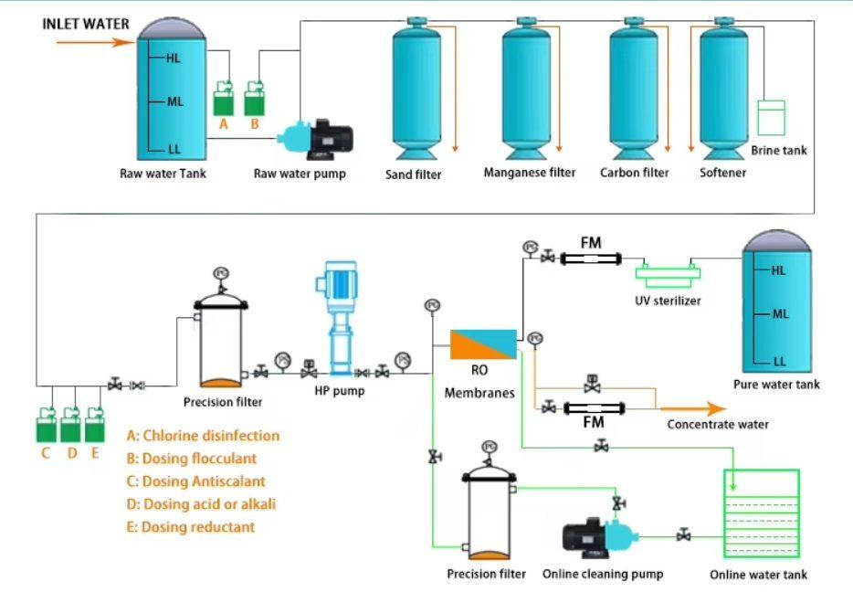

Solusi turnkey untuk pabrik Air Minum Dalam Kemasan: water treatment, ozonisasi, UV sterilization, dan mesin filling untuk cup, botol PET, dan gallon. Sistem yang siap memenuhi standar BPOM, SNI 3553, dan halal MUI.

Industri Air Minum Dalam Kemasan (AMDK) di Indonesia tumbuh konsisten di atas 7% per tahun, didorong meningkatnya kesadaran konsumen akan kualitas air minum dan permintaan untuk produk regional. PT Tirta Sumber Makmur menyediakan solusi turnkey lini produksi AMDK — mulai dari air baku, water treatment, sampai mesin pengisian dan packaging — untuk pengusaha yang ingin memulai pabrik AMDK atau memperluas kapasitas existing.
Berbeda dengan importir yang hanya menjual mesin filling generic dari China, TSM menyediakan paket lengkap: analisis air baku, desain water treatment kustom, integrasi mesin filling tier-1, ozonisasi dan UV sterilization, hingga dokumentasi teknis untuk perizinan BPOM dan SNI. Pengalaman 24 tahun kami di water treatment industri memastikan air produk Anda memenuhi standar BPOM dan terbukti aman untuk konsumen.
Lini AMDK lengkap terdiri dari 6 zona utama yang harus terintegrasi dengan benar untuk menghasilkan produk yang aman dan compliant:
| Kapasitas Lini Cup | 1.000 – 10.000 cup/jam |
| Kapasitas Lini Botol PET | 1.000 – 8.000 botol/jam |
| Kapasitas Lini Gallon | 200 – 600 gallon 19L/jam |
| TDS Air Produk | 50 – 150 ppm (sesuai SNI 3553) |
| Konsentrasi Ozon | 0,2 – 0,4 mg/L (residual) |
| Dosis UV | ≥ 40 mJ/cm² pada 254nm |
| Material Kontak Air | SS-304 / SS-316L food grade |
| Standar Compliance | BPOM, SNI 3553:2015, halal MUI |
Banyak pengusaha AMDK pemula tergiur paket murah dari importir mesin China. Yang mereka tidak ketahui — water treatment generic biasanya tidak cocok untuk air baku spesifik di lokasi mereka, dan setelah 6–12 bulan masalah kualitas mulai muncul: TDS tidak konsisten, kontaminasi mikroba, atau gagal audit BPOM.
Brand AMDK Regional di Bekasi — TSM membangun lini produksi 5.000 cup/jam + 200 gallon/jam untuk brand AMDK regional yang memulai usaha pada 2023. Paket termasuk water treatment kustom (air baku sumur dalam dengan besi 1,5 mg/L), ozonisasi, UV, dan dokumentasi BPOM. Klien berhasil mendapatkan izin BPOM MD dalam 8 bulan dan SNI 3553 dalam 11 bulan.
Private Label AMDK Resort Pulau Seribu — Resort dengan SWRO TSM sebelumnya memutuskan menambah lini AMDK skala kecil 1.500 cup/jam untuk konsumsi tamu dan brand corporate. Lini ditempatkan dalam kontainer 20 ft, terintegrasi dengan SWRO existing. Compliance sertifikasi mengikuti standar internal hospitality, tanpa perlu BPOM publik.
Usaha AMDK di Indonesia membutuhkan: (1) NIB (Nomor Induk Berusaha), (2) Izin Edar BPOM dengan kode MD untuk produksi dalam negeri, (3) Sertifikat SNI 3553:2015 wajib dari LSPro yang terakreditasi KAN, (4) Izin Lingkungan (UKL-UPL atau AMDAL tergantung skala), (5) Sertifikat Halal MUI, dan (6) Izin lokasi industri dari pemda. TSM membantu klien menyiapkan dokumentasi teknis untuk semua izin tersebut.
Investasi mesin AMDK bervariasi tergantung kapasitas dan tingkat otomasi. Skala kecil 1.000–3.000 cup/jam: Rp 350–650 juta. Skala menengah 5.000–10.000 cup/jam plus lini gallon: Rp 1,5–4 milyar. Skala besar dengan PET botol dan multi-line: Rp 5–15 milyar. Investasi termasuk water treatment, ozonisasi, UV sterilizer, mesin filling, dan packaging.
Banyak importir menjual mesin filling China generic tanpa support lokal. TSM menyediakan paket turnkey dengan: (1) integrasi water treatment kustom sesuai air baku Anda, (2) komponen kritis dari merek tier-1 (membran Dow Filmtec, ozon dari Ozonia/Wedeco, UV dari Trojan), (3) instalasi dan commissioning oleh tim TSM, (4) training operator dan SOP dalam Bahasa Indonesia, dan (5) after-sales service nasional dengan stok spare parts.
Tahap teknis (mesin sampai siap produksi): 4–8 bulan untuk skala kecil-menengah, 8–14 bulan untuk skala besar. Tahap regulasi (BPOM, SNI, halal): umumnya 6–12 bulan paralel dengan instalasi mesin. Total dari pengambilan keputusan hingga commercial production sekitar 12–18 bulan untuk operasi yang fully compliant.
Ya. Untuk klien yang baru memulai usaha AMDK, TSM menyediakan layanan engineering konsultatif: layout pabrik, P&ID, utility sizing (listrik, kompresor, chiller), persyaratan ruangan steril (sesuai CPPB-IRT BPOM), dan koordinasi dengan kontraktor sipil. Kami fokus pada zona water treatment dan filling, dan dapat menjadi single point of contact untuk seluruh proyek pabrik.
Memulai usaha AMDK adalah keputusan investasi besar yang menentukan reputasi brand Anda untuk dekade ke depan. Konsultasikan rencana bisnis dan target pasar Anda dengan tim TSM untuk mendapatkan rekomendasi konfigurasi lini, estimasi investasi yang akurat, dan timeline regulatory yang realistis.
Tim engineer TSM siap mendiskusikan rencana bisnis Anda dan merekomendasikan lini produksi yang tepat.